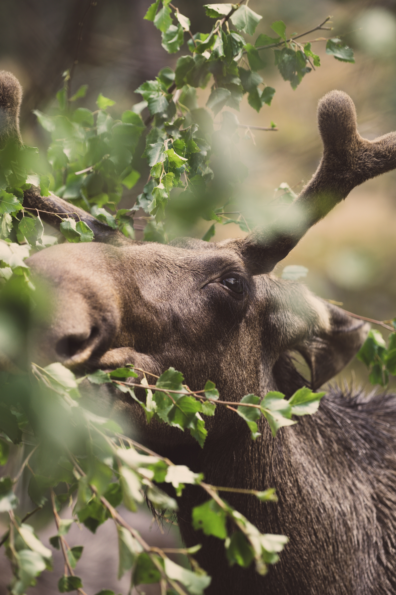

Le roi du froid
Attention :
Il ne faut surtout pas confondre le Renne avec l'Elan, cet autre animal majestueux. L'un est grégaire, c'est à dire qu'il vit en troupeau ( le Renne ) et l'autre est solitaire ( l'Elan ).

Nom commun : Elan
Nom scientifique : Alces
Famille : Cervidés
Taille : 1,4-2m pour le mâle et 1,7-1,8m
pour la femelle
Poids : 330-700kg pour le mâle et
230-410kg pour la femelle
Habitat : Amérique du Nord et Nord Est de
l'Europe et de la Russie